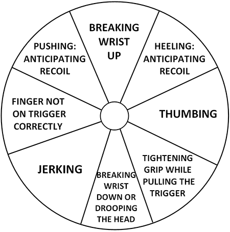

Error Analysis and Correction
Insanity: doing the same thing over and over again and expecting different results. - Albert Einstein
The Wheel of Misfortune
Every day of the shooter's life brings a new lesson. Identifying errors are crucial in order that these lessons be learned. The following chart can help pinpoint such basic flaws in a shooter's technique by analyzing group locations. As printed, it is for a right-handed shooter. (A left-hander's chart would be mirrored horizontally.)

Top Eleven Bad Habits of Shooters
- Not Looking at the Sights. This quite frequently is listed as "looking at the target." A shooter may be focusing his eye on neither the sights nor the target, but since he does not see the target in clear focus he assumes he is looking at the sights. You must concentrate on sight alignment.
- Holding Too Long. Any adverse conditions that interrupt a shooter's ability to "hold" will cause him to delay his squeeze, waiting for conditions to better. The disturbing factor about this is that you will do it unconsciously; therefore, you must continuously ask yourself, am I being too particular?
- Improper Grip or Position. Suffice to say that you cannot fire a decent score with any gun at any range if you continually change your grip or position.
- Jerk or Heel. The application of pressure either with the trigger finger alone or in case of the heel, pushing with the heel of the hand at the same time. Apply pressure to the trigger straight to the rear and wait for the shot to break.
- Anticipation. Anticipation can cause muscular reflexes of an instant nature that so closely coincide with recoil that extreme difficulty is experienced in making an accurate call. Anticipation is also the sire to flinching.
- Loss of Concentration. If the shooter fails in his determination to apply positive pressure on the trigger while concentrating on the front sight his prior determination needs renewal and he should rest and start over.
- Anxiety. You work and work on a shot, meanwhile building up in your mind doubt about the shot being good. Finally you shoot just to get rid of that particular round so you may work on the others.
- Vacillation (Plain Laziness). This is a mental fault more than a physical one, which results in your accepting minor imperfections in your performance which you could correct if you worked a little harder. The end result being you hope you get a good shot. Just like you hope you will get a gratis tax refund, and you will get one just about as frequently as you get the other.
- Lack of Follow Through. Follow through is the subconscious attempt to keep everything just as it was at the time the shot broke. In other words you are continuing to fire the shot even after it is gone. Follow through is not to be confused with recovery. Merely recovering and holding on the target after the shot is no indication that you are following through.
- Lack of Rhythm. Hesitancy on the first shot or any subsequent shot in timed or rapid fire. Develop a good rhythm and then have the fortitude to employ it every case. Frequently many shooters will have fine rhythm until the last shot of a string and then hesitate, doctoring up that last shot.
- Match Pressure. If there are 200 competitors in a match, rest assured that there are 200 shooters suffering from match pressure. So what makes you think you are so different? If you are exerting all your mental energy toward executing the correct fundamentals rather than the arithmetic evaluation, your shooting match pressure will be what you feel when people congratulate you on a fine performance.